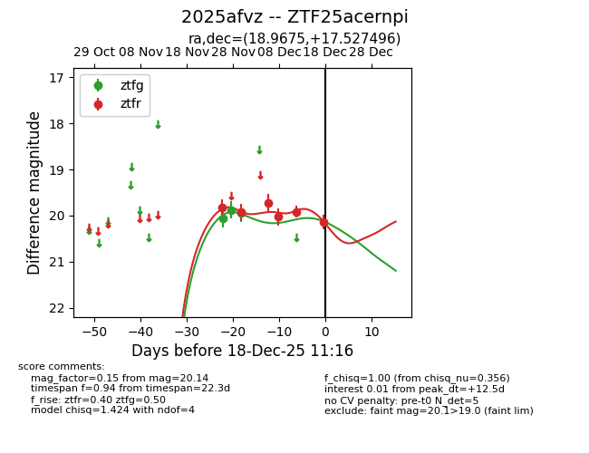
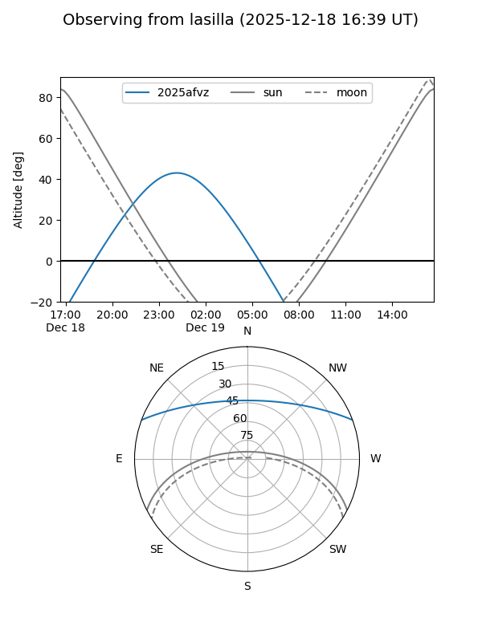
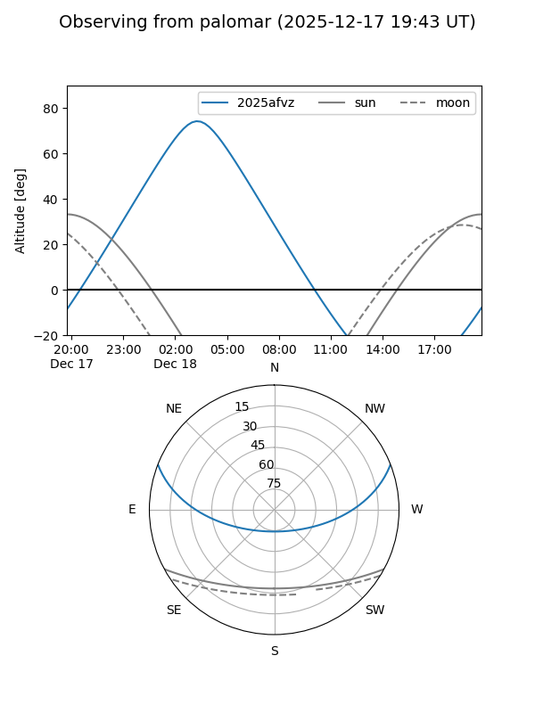
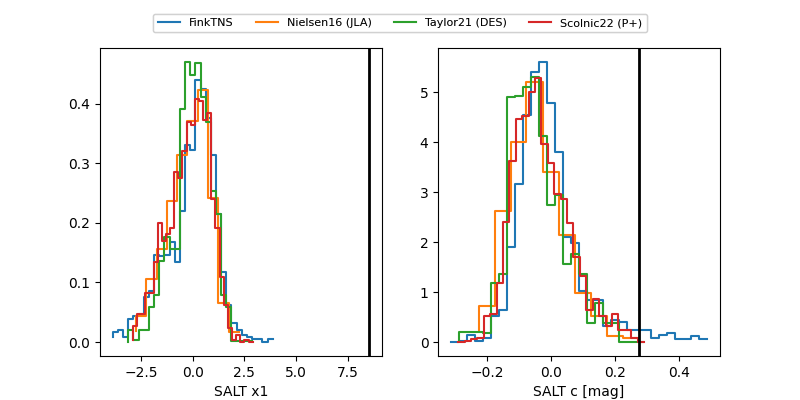

2025afvz
Target 2025afvz at 2025-12-18 11:17
Aliases and brokers:
FINK: fink-portal.org/ZTF25acernpi
Lasair: lasair-ztf.lsst.ac.uk/objects/ZTF25acernpi
ALeRCE: alerce.online/object/ZTF25acernpi
TNS: wis-tns.org/object/2025afvz
YSE: ziggy.ucolick.org/yse/transient_detail/2025afvz
alt names
ZTF25acernpi (ztf,fink_ztf)
2025afvz (tns,yse)
Coordinates:
equatorial (ra, dec) = 18.9675,+17.52750
equatorial (HMS+DMS) = 01:15:52.19,+17:31:38.98
galactic (l, b) = (131.1749,-44.95286)
Photometry
last ztfg=19.94, ztfr=20.14
3 ztfg, 6 ztfr detections
Lightcurve

Visibility


Additional plots
